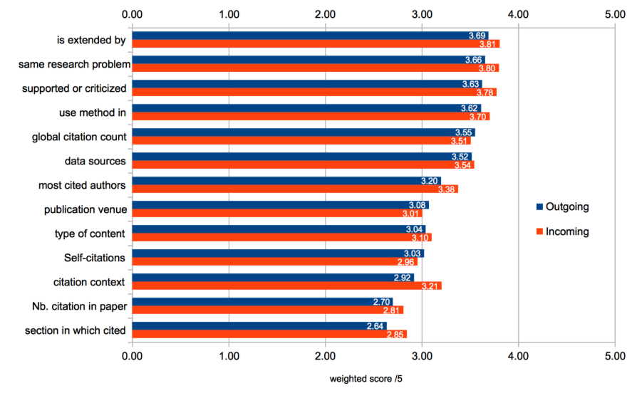
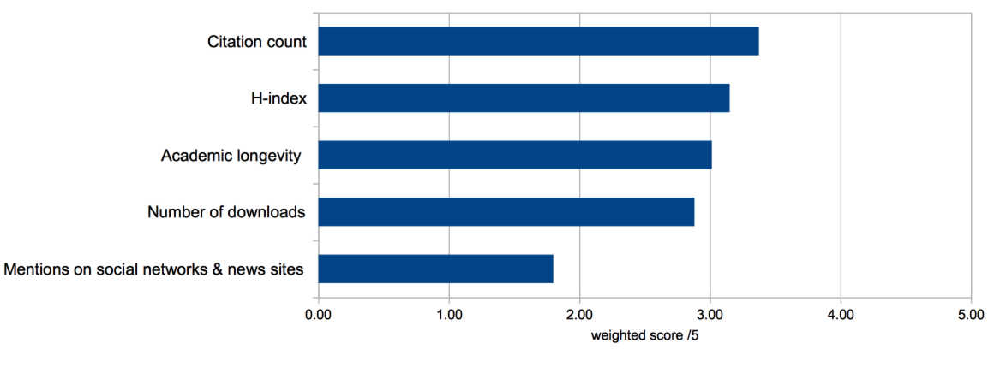

Citations within academic literature keep gaining more importance both for the work of scholars and for improving digital libraries related tools and services. We present in this paper the preliminary results of an investigation on the characterizations of citations whose objective is to propose a framework for globally enriching citations with explicit information about their nature, role and characteristics. This article focuses on the model we have built to support the automatic analysis of large corpuses of citations. This model is grounded on a literature review also detailed here, and has been submitted to a group of several hundreds of scholars of all disciplines in the form of a survey. The results show that our model covers the most important aspects of the characterization of citations with some domain specific insights that are also addressed in this paper.
Citations are fundamental tools for scholars, anytime during their career. Everyone focuses on different aspects and looks for them while working. A PhD student surveying the literature for her thesis exploits citations to find relevant papers; a senior researcher deepening his research exploits citations to continuously find new material; a reviewer reads citations to understand if the citing works are up-to-date and well-connected to others; a professor writing a project proposal uses citations to spot recent works and useful links; and several other examples could be cited here.
A research line about citations that have been studied for long time, and is increasingly re-gaining importance, is about the identification of authors' motivations for citation. Several schemas of what they are often called citation functions have been proposed by the community towards this goal, very heterogeneous in terms of number of options, granularity and, above all, type of classification: some schemes focus on structural features (position in the paper, section, etc.), some on semantic aspects (negative or positive citations, rhetorical aspects, etc.); some on objective properties, some others on more subjective ones; moreover characterizations also differ a lot among disciplines.
This paper presents a review of these proposals and tries to identify common traits and suggestions for new models. Also, it presents the results of a survey we conducted with more than three hundred scholars to investigate which characterizations are really useful for the final users. To the best of our knowledge, this is the first quantitative study on how users perceive qualified citations, with the aim of deriving which aspects are considered more important and why.
This work is part of a larger project on enriching citations, called SCAR – Semantic Coloring of Academic References. In our vision, each citation (both references in bibliographies and incoming citations) is treated as an individual, first-class entity, which can be classified, accessed, filtered and grouped with other references according to different criteria.
This work is in fact a first step to identify a suitable model for characterizing citations, that will be used as reference for automatic classification in the SCAR project. Our goal here is also to collect further feedback from the community, so as to incrementally refine our model.
Thus, the paper is structured as follows. reviews the related works, from which we derived a data model for characterisations presented in detail in . The scholars survey is presented in before drawing some conclusions in .
Nowadays, the impact of authors, the comparative evaluation of scientists and other research evaluations are mostly based on quantitative metrics for citations (e.g. h-index). The validity of these approaches has been often criticised (see for e.g. ) as it doesn’t account for different qualitative aspects of citations. Negative or self-citations should be weighted in a different way compared for example to affirmative or methodological citations. White in however tackles the penalization of negative citations saying that it is anyway an achievement to have one’s work noticed by others. It is clear that some cases might be controversial but this is not always the case. A famous example reported by is the case of a South Korean research scientist, Hwang Woo-suk, whose faked research gained popularity with its 200 citations, most of which were negative. Negative citations in this last example have a significant weight.
Authors might show ambivalent opinions regarding a cited work (as discussed by ), dissemble their real viewpoint for politeness and stylistic reasons and change their opinion over time.
Citations functions don’t differ only in authors' motivations but they depend also on the research domain where the use of citations varies from discipline to discipline (see ) both on motivational and structural level.The question of qualitative bibliometrics is gaining interest in literature and researchers are suggesting different approaches to the problem (see , , ).
The qualitative analysis of citations functions is not important only for bibliometrics purposes, it can help researchers in their everyday work. Browsing references and lists of cited works is a time consuming activity which can be made easier by automatically highlighting those aspects a scholar is looking for. Having specific papers highlighted with a simple click would save precious time.
One of the first step in this direction is the delineation of a citation functions schema which works as a basis for an automatic citation characterisation tool. This is not an easy task considering the different features and aspects that we have to take into account.
Despite the indisputable value of authors' motivations for citation, these might not be the only characterizations a user is looking for while surveying references and lists of citations. We will see later in the paper that other characteristics should be considered that not only can be interesting for the user but can also improve the automatic identification of authors' motivations for citation.
Since the middle of the last century, authors' motivations for citations has been subject of several studies. Both structural and semantics aspects have been taken into account and most of the times the studies are domain specific (mainly scientific fields). This fact raises different problems regarding the formulation of a proper schema such as granularity and interdisciplinarity.
One of the first work on the topic is Garfield 1965 whose list of authors’ motivations for citation behaviour has been widely cited in literature. Garfield is also one of the first authors to envisage a machine able to automatically identify such motivations. In fact, most of the existing citation functions schemas are the result of theoretical studies and manual analysis more than basis for automatic tools. On the contrary, one of the purposes of the SCAR project is the automatic classification of authors' motivations for citations. This is not the first project with this intention since different experiments already exist but with a different final purpose compared to our project. See where reasons for citations are automatically determined as important feature for automatic generation of reviews of articles and who use machine learning methods for citation classification.
Looking at the literature gave us an idea of the efforts made so far to identify the basic authors’ motivations for citation and the difficulties we have to face to build a proper schema for our project.
Existing schemas differ in the number of citation functions they include and consequently in degree of detail. For example, propose four categories of citations (background, fundamental idea, technical basis and comparison) while more than thirty. A detailed and well formed classification model is CiTO ( ) whose 41 citations properties are hierarchically structured and divided into factual and rhetorical (further classified as negative, neutral, positive). CiTO has been already used in different tools and other projects like CiteULike and Data.open.c.uk as well as reference scheme to annotate citations directly via browser or CMS plugins .
Several studies on the citation functions (See for e.g. ) refer to the four-categories schema proposed by Moravcsik and Murugesan : conceptual (theoretical) vs. operational (methodological); evolutionary (build on cited work) vs. juxtapositional (alternative to cited work); confirmative or negational and organic (necessary to understand the current work) vs. perfunctory (not really necessary for the development of the current work). The last pair is interesting because it introduces the concept of information utility of a citation. The perfunctory function has been pursued in different citation functions schemas such as , , and .
The question of the utility and importance of a citation compared to others is a recurrent topic in literature. divides his different categories in primary and secondary sources, conceive citation to be central or peripheral, figures background citation and fundamental background ideas and one of citation functions is significant i.e. the cited work is important for the current paper.
The relevance of a citation is also related to the difference between constituent and parenthetical citations (See ); does a citation in brackets has the same value of a citation with a syntactic role in the sentence? This is a question it might be interesting to investigate. In the same way, single citations and groups of citations, especially when redundant (in the Moravcsik’s concept of redundant, i.e. several papers each of which makes the same point), should be accurately considered.
Besides the shared comparison axis, existing schemas have other recurrent properties both on semantic and objective level. Since two of the most contemplated semantic properties concern the use of a citation in order to affirm or negate/criticise a cited or citing work. named them confirmative and negational functions, confirmational and negational; for a cited source can be positively or negatively evaluated; put in their fine-grained citation function classification schema a negative function (when the weakness of the cited work is discussed) and a positive function (when the cited work is successful). These two authors' motivations are strictly related to the work of polarity analysis of citations (see ).
Other recurrent semantic features are the idea of supporting and we found it for example in , , (who classifies it as a sub-category of the affirmation property), and and those of extending, see for example and .
On the objective side, two main aspects arise from the majority of the schemas: citations used as background and those which are references to methods and data sources. Among the ones who adopt the background function, distinguish general background from specific background and like other colleagues define the background as historical (e.g. ). Methods and data, seen both as a single ( ) or separated ( ) properties, are the most recurrent functions from Garfield 1965 to Dong 2011 where they are named technical basis.
While some properties like methods and data seem to be highly related to the scientific domain most of the schemas belong to, the other properties are more interdisciplinary and thus can be applied to different domains (see for an overview).
Our analysis is further confirmed by Tahamtan’s study of the most used citation functions in literature ( ).
Imagine a scholar browsing references or a list of cited by works of a paper, it would be useful for him/her to have a clear marked representation of why an author cites someone else (citation functions) but it would be interesting for him/her knowing other aspects, for e.g. where does a citation appear in the paper? Paper sections bring important information about a citation as well as its location in a broader sense (beginning, central, final part). As point out «the citation location might reveal the reasons and decision rules for citing a specific document». Hernández et al. affirm and show in their 2016 survey ( )the existing relationship between the location of a citation and its polarity. Moreover, different locations often mean different relevance. For example note that citations outside the introduction are perceived to be more valuable since this section often contains general background information and the highest number of citations (compared to other sections). These aspects can also help the automatic identification of citation functions (see ) but their validity depends on disciplinary structures which might differ among domains and for e.g. be more flexible in humanities.
The scholar might also be interested to have more info about the authors that cite and are cited in order to deepen her/his research by looking to related works. Who are the most influential? Who work on the same topic? Who belong to the same university, institution, lab? While clearly showing self citations can help a reviewer’s activity.
She/He might like to quickly highlight papers published on the same journal, in the same venue, in recent or old years and also the most cited works of a paper.
Only some of these characteristics are now available on existing platforms and with a completely different interface and user interaction compared to what we have in mind.
The characterizations discussed so far constitute a valuable background for this work. We continue our past research as part of a new project called SCAR, whose goal is to enrich lists of citations with explicit information about their role, features and impact. These traits are called 'colours' in the SCAR terminology: coloured citations are effective tools for scholars while reading, searching, comparing and evaluating research.
The basic idea is to let scholars access enhanced publications in which the bibliography is not a monolithic unit, as it happens today, but a collection of entries that can be shown, filtered and aggregated according to multiple criteria (colours). The same capabilities can be added to the lists of incoming citations: these are very common in digital libraries and citation indexes that often show lists of related articles when reading one. Coloring both outgoing and incoming citations is the main goal of our research.
Some questions arise naturally: which colours shall we use? How are these colours related to each other? Which information is most interesting for the users?
Our approach is intended to be interdisciplinary and also targeted to the final users. We do not envisage a task-oriented set of colours but we rather aim for a reusable and user-oriented set. We also expect to extend the coloring scheme with some domain-specific characterisations but we currently focus on the core features.
This section introduces our scheme, derived from the literature review and our past studies in this area. The next section presents a survey we conducted with more than 300 scholars so as to understand if our characterisations are perceived as clear and useful.
summarizes our data model. The characterisations are organized in seven classes, shown in the first column of the table, that represent different aspects we are interested in. Single characterizations are listed in the right column and identified by a label composed of a letter corresponding to the class and a progressive number. These references will be used throughout the paper.
| Class | Options and details |
|---|---|
|
Citation metrics |
global citation count (m1) | number of times cited in the current paper (m2) |
|
Author metrics |
self-citation (a1) | most cited authors (a2) |
|
Type of cited work |
type of venue (s1) | type of contribution (s2) | awarded (s3) |
|
Citation context |
sentence/paragraph (c2) | section name (c2) | single or grouped citation (c3) |
|
Temporal information |
time span (t1) |
|
Citation functions |
extends (f1) | same research (f2) | suggests or critiques (f3) | use method in (f4) | data source (f5) | ... |
|
Citation polarity |
positive (p1) | negative (p2) | neutral (p3) |
The first class is named citation metrics. In fact, one of the most common task citations are used for is to identify the most relevant articles in a research area: the more a paper is cited the higher its impact. Thus, despite the very basic nature of this feature, we believe it is helpful to enrich bibliographies with the global citation count of each cited paper (m1). This metrics count does not consider for example that an article might be cited many times by the same source, a situation that might indicate that the cited paper was very influential for the citing one (See and ). This is captured as (m2) in our model.
The considerations about the impact of cited articles can be easily extended to the authors: a list of citations that also include data about each author, in fact, might be used to identify potentially interesting works written by the experts of a given domain (a2). The authors metrics class is completed by hints about self-citations (a1): their identification is often needed to picture the scientific production of an author and for evaluation purposes.
Citations can also be classified according to the publication venue of the cited work (s1) differentiating for instance between workshop, conference and journal articles. Such a characterisation is helpful when evaluating research contributions. Another interesting dimension is the classification of citations according to the actual contribution of the cited work (s2). The citations could be annotated as citing research papers, surveys, in-use reports, position papers and so on. This is helpful when exploring a research topic: the ability to easily spot surveys or application reports makes searches much easier and faster; similarly it is useful to identify full research papers when searching contributions within scientific events. The fact that an article was awarded is a further information that could be exploited by the scholars (s3)
Temporal information about cited or citing articles are also relevant here. Consider, for instance, the task of checking the freshness of references while reviewing an article: there is no better way to do this than inspecting each reference and manually remove outdated ones. This could be done automatically providing users with filtering widgets that work on annotated references and their time-related data (t1).
Citations could also be enriched with information about their textual context. The term 'citation context' has been introduced to indicate the sentence of the paragraph in which a paper is cited but different conceptions of its size window have been investigated during the past years (See and ). Showing such context has been proved to be useful for the readers and several platforms already include it (c1) (e.g. CiteSeerX and ResearchGate).
Other contextual information could be provided about the section containing the citation (c2). As previously shown, several studies confirm the significance of the location of citations as an important feature for the authors' motivations identification, see also the Teufel’s Argumentative Zoning theory ( ) and the work of Abu-Jabara ( ) where paper section is used as one of the features to identify citation purpose and polarity. In the same work, Abu-Jabara considers also the difference between single and group of citations as an important aspect for citation classification; he was not the only one proving the importance of this feature and we included it in our model(c3).
The last two classes of our model comprise the most challenging characterizations: citation functions and polarity.As seen in a previous section, several citation functions schemas have been proposed through the years which converge in different aspects.
One of the most exhaustive and well hierarchically structured schema is CiTO ( ) whose 41 citations properties are divided into factual and rhetorical, further classified as negative, neutral and positive, an example of the close correlation between citation functions and polarity. In we studied how CiTO ontology is perceived and used by users. The idea of the study came for the observation that the projects which adopt CiTO employ a sub-set of its properties. For example the Link to Link Wordpress plugin allow user to specify 10 of its properties: the generic function cites and its sub-properties citesAsSourceDocument, confirms, extends, obtainsBackgroundFrom, reviews, supports, usesDataFrom, usesMethodIn, and disagreesWith while the Pensoft Publishers enable authors to annotate their citations according to only 6 of CiTO properties: citesAsDataSource, related, critiques, supports, reviews and discusses. In fact, the richness of CiTO ontology can be seen also as a hindrance by annotators and a less fine grained functions set seems to be more usable. In our previous experiment, two groups of ten subjects with different backgrounds and skills were asked to annotate citations whose contexts were automatically extracted from the proceedings of the Balisage Conference . The first group was provided with the full list of 41 CiTO properties while the second one performed the same task by using a subset of 10 CiTO properties (selected with a preliminary experiment, see ).
Results show that besides the most generic and neutral functions such as citesForInformation or citesAsRelated both groups of annotators mainly used some specific functions: obtainsBackroundFrom, citesAsDataSource, citesAsReccomandationReading, Credits, usesMethodIn, Critiques and the first group employed only a sub-set of the 41 properties (See for the detailed results). The most used functions of the human annotation experiment and also those selected by other projects are in line with the most common citation features we found in literature and are the ones we included in our citation functions list (f1-f5).
The last class of our model regards polarity of citations. This type of sentiment analysis, meant to classify positive (p1), or negative (p2), or neutral (p3) categories, has been proved to be related to paper sections. Furthermore it can provide a broad pattern of agreement and disagreement among authors (see ). In addition to providing a straightforward view of authors opinions to scholars, polarity can help survey generation systems ( ) and citation-based summarization systems ( ).
In the next section we will show how our model is perceived by scholars, investigated through an ad-hoc questionnaire. This step was conceived in order to sharpen and finalise our analysis on citation characterizations.
We asked the respondents to our questionnaire to figure themselves as a user of a platform which gives access to full texts articles together with bibliographic references, and additional informations on the articles cited by a given paper (outgoing citations) as well as on articles citing this paper (incoming citations). The first part consisted in rating the relevance (from 0 to 5) of 13 characterizations for both incoming and outgoing citations, as well as impact factors of the articles authors, with the possibility each time to suggest other information through a free text box
We shape the questionnaire according to the model we had in mind, but we did not show the whole model (covered in previous section) merely to keep duration of the test as low as possible. Hence the characterizations submitted are: is extended by, same research problem, supported by or criticized by, use method in, global citation count, data sources, most cited authors, type of publication venue, type of content, self-citations, citation context, in paper citation count, section in which cited. Each of these characterizations can be used for outgoing and incoming citations, and within the questionnaire, both cases were presented each in a different section and a detailed explanation was given for each characterization . A final part of the survey was collecting info about the background of the respondents, focusing on the research domain, role, and habits regarding the use of digital scholar libraries.
We obtained in total 318 responses for this questionnaire. Respondents were coming from all continents, many different background, occupying academic positions spanning from PhD student to senior researchers, and from all main academic disciplines. To distinguish generic classes of disciplines, we have used the decomposition into 24 specific disciplines grouped in 4 broad categories used in Science Direct. The latter are given below with the percentage of respondents it represents:
Life Sciences (LS, 17%) which includes more specifically e.g. Agriculture and Biological Sciences, Environmental Sciences, etc.;
Health Sciences (HS, 12%) which comprises Medicine and Dentistry, Nursing and Health Professions, etc.;
Physical Sciences and Engineering (PSE, 42%), comprising Mathematics, Computer Science, Chemistry, etc.;
and Social Sciences and Humanities (SSH, 29%) including Economics, Psychology (psy), etc.
If we group Life Sciences and Health sciences, for they share common roots in biology, we get a rather even distribution between PSE, SSH and the group Health and Life Sciences.The 24 specific disciplines are not as evenly distributed, but we have nonetheless analyzed the detailed results for those specific disciplines that represented more than 5% of the total respondents group. These disciplines, representing 47% of all respondents, are: Engineering, 11.5%; Economy, 8.18%; Computer Science, 7.4%; Medicine and Dentistry, 7%; Agriculture and Biological Sciences, 6.7%; and Chemistry, 6.3%.
The balanced distribution across the main broad disciplines makes the global results obtained in this questionnaire representative of the scientific community. We first present the global results and detail when relevant domain specific peculiarities.
To compare the different characterizations, we calculated, for each of them, the weighted score of relevance, the score's possible value ranging from 0 (not relevant) to 5 (very high relevance). Given the percentage p(s) of response for each score s, the weighted score S is obtained by summing for each score value s the product p(s) * s. reports the weighted score for all citation characterizations for outgoing and incoming citations.

The values of the weighted score range from 2,61 (section in which cited for outgoing citations) to 3,78 (is extended by for incoming citations). Therefore all characterizations remain around the medium score, i.e 3. The standard deviation for each calculation of the weighted score range from 1 to 1,3 across all the cases. This level of standard deviation accounts for the relatively flat distribution of the ratings of all respondents.
Several remarks can be drawn from the global results:
Due to the small amplitude and to a standard deviation not negligible, it is not straightforward to establish a significant ranking among the highest scored characterizations, nor to discard the characterizations with the smallest score. This means that all of them can be considered of relative interest for the majority of the respondents.
Looking at the group of 7 chracterizations whose weighted score is above 3, one can observe that the 4 most highly scored characterizations (both for incoming and outgoing citations) are citation functions and that the only factual features are all related to the global citation count (global citation count and most cited author).
The highest gap between the weighted score value of incoming and outgoing citations for a given characterization is found for the citation context (3,21 for incoming, 2.92 for outgoing). This shows that this information is more valuable when given for the citing articles than for the cited article.
The free text box inviting testers to suggest additional characterizations was skipped or given a "none" or equivalent response by 95% (incoming citations) and by 85% (outgoing citations) of the respondents. Although this does not demonstrate that the above list of 13 citation characterizations is complete, it gives us a pretty good hint in showing that the most wanted characterisations were covered in our listing. Out of the few suggestions we received, the year of publication and the impact factor of the venue in which cited work was published were the most frequent.
Loking at the domain specific results, the global citation count gains less interest in the Health Science community, both for outgoing and incoming citations. In the outgoing and in the incoming citations rankings, this characterization falls at the 9th position (5th position for the global results) and, in absolute, it also gets smaller weighted scores of 3.09/5 (outgoing) and 3.14 (incoming) with respect to 3.55 and 3.51 in the global results.
The same tendency of distrust towards citation count is observed in chemistry where both most cited author and global citation count fall to respectively the last and 3rd to the last positions, in contrast to their 7th and 5th position in the global results. Another observation that reinforces this impression is the strikingly high rank chemists give to self citations. In both outgoing and incoming cases, this property ranks respectively at the 4th and 6th position while it lags behind at the 10th and 11th position for the global results. Being reluctant at giving priority to the most cited works and authors, chemists tend to be in the same fashion more willing to know which authors cite themselves.
Looking at other specific domains, the contrary can be observed in the economics community that clearly evaluates the global citation count as the most interesting characterization for both outgoing and incoming cases. Indeed, the weighted score in this case tops off at 3.91 (outgoing) and 3.77 (incoming) distancing even more clearly than in the global results the second most praised characterization, i.e same research problem in this case. This phenomenon is also observed for the broad category Social Sciences but only in the outgoing case with the global citation count clearly ranking first with a weighted score of 3.83, with respect to 3.55 in the global results and with respect to the second characterization in this category rated on average 3.70
Regarding the highest ranked characterizations some subtleties can be observed in Chemistry, Medicine, and Computer Science.
In chemistry, the use method in characterization ranks more clearly at the first position in both incoming and outgoing case, distancing the second by 0.18 and 0.06 point instead of 0.01 and 0.03 point in the global results. This is maybe explained by the highly experimental nature of chemistry.
In Medicine, the data source characterization ranks first but in the outgoing case only and by distancing the second by 0.05 point. Again, this slight shift in the top characterizations towards giving more importance to the provenance of data can be easily understood in the medicine case.
Finally in Computer Science, we merely observed that the most praised characterization is more clearly than in the global case the address the same research problem characterization. This characterization out-stands its followers by 0.25 (outgoing) and 0.2 (incoming) points, peaking at the highest average grades, all disciplines put together, of respectively 4.30 and 4.20.
The importance given to the global citation count is confirmed by the next question we asked about the evaluation of the impact of the authors of academic publications. Similarly to the previous question in the test, we asked testers to rank the relevance (from 0 to 5) of the following impact factors:
citation count, i.e. the total number of times an author's contribution has been cited by another academic work.
h-index, i.e a compund citation count including the productivity of an author.
academic longevity, i.e. the number of year an author has been working and publishing on the same domain.
number of downloads, i.e. the number of times an author's contribution has been downloaded by a user of the current digital library.
mentions on social networks or on-line news sites

The global results of the weighted score for each of these impact factor (reported in ) show that the citation count remains clearly the most praised indicator of the impact of an author with a weighted score of 3.38/5. 3 impact factors are coming after, which are all relatively close to each other and still gain a relevance score close to 3/5. The clearly least relevant impact factor is the number of mentions within social networks or on-line news site with a weighted score of 1.80.
Regarding the influence of whether we are dealing with outgoing or incoming citations with respect to impact factors, we asked testers if they find this indicators useful for both or only incoming o outgoing citations. Respondents answered "both" in 82% of the cases.
As a conclusion on this point, we can note that the established citations count keeps its authority, alternatives are gaining recognition, but the visibility research works manage to drag in the social networks has yet to convince academics of its reliability. The global results remain almost identical across broad domain categories, but some slight variations can be observed.
The citation count is hence not always the most praised impact factor. Indeed the Health Sciences community places the h-index at the first place with a weighted score of 3.36/5 instead of 3.15/5 for the citation count. Looking at finer grained categories, this very result is naturally confirmed for the Medicine community. Similarly, for the chemistry community the academic longevity (2.65/4) outranks both citation count (2.56) and h-index (2.53). This last result confirms a distrust towards citation-based metrics already observed for this community in the citation characterizations seen above.
The number of mentions on social networks is always the least appreciated of all impact factors. Nuances can be observed tough, such as with the computer scientists who despise it the least with a weighted score of 2.25 instead of 1.80, and the chemists are those to give it the smallest weighted score of 1.12. The number of downloads never outranks the 3 first indicators in the global results, but it sometimes matches the score of academic longevity for the economists or the h-index for the chemists.
This article presented the preliminary results of an investigation of the SCAR project aimed at providing a global framework for citation characterizations. This project is focused on enhancing the end-users experience of searching, reading, and further exploiting academic papers and material. Hence, we first focused on defining the most appropriate conceptual framework for analysing citations with a thorough literature review. Then, we proceeded with the elaboration of a data model aimed at supporting the architecture of our system. In parallel, we conducted a survey among scholars in order to strengthen the foundations of our data model on citations characterizations.
Regarding the survey to which more than 300 scholars of all disciplines responded, the main outcome is that all the citation characterizations that we submitted to the rating of testers (all represented in our model) are considered interesting. Furthermore, citation functions, which offer an information of a substantial higher level on the motivations behind a citation, clearly got more interest than more factual characterizations that are often already found in currently available tools. This confirms that scholars are willing to see these features coming to the digital libraries they often use, and that our model covers the usage we envision.
Besides confirming that the citation count and the h-index are globally the most appreciated authors impact factors, the survey also revealed some domain peculiarities regarding the importance given to the citation count. Indeed, chemists and health scientists tend to give less credit to citation count-based characterizations, especially comparing to economists who rank it first. Similarly, the firsts seem to be willing to balance a pure citation count regarding impact factors by favouring more than in the global case the h-index and the academic longevity.
More globally, the results of the survey has strengthened our intuition that more advanced citation characterizations are meaningful for being integrated within end-user tools. First a majority of the respondents admit to use several digital citations-based tools or platforms on a regular basis and for citation analysis related purposes. Second, some very specific citation functions gained higher relevance score than more factual characterizations, showing that they are not only understood but also expected by users.
The preliminary results reported here helped us validated the model of citations characterizations also introduced in this paper and which will be used in supporting the architecture of the SCAR project. The goal of SCAR is to offer services of advanced citation characterizations for large corpus of academic papers. In the next steps of the project, we will thus investigate state of the art methods and algorithms to characterize the most wanted citation functions in order to integrate them in a semantic web based technological stack. The envisioned architecture is based on extended citations data that are extracted from the articles XML full text files and stored as RDF in a triple store. This primary set of data will then be analyzed in order to identify the citation functions and serialized in RDF using the semantic web version of our data model. This higher level of data will then be available for use by third parties digital platforms providing access to citation data and academic material. We thus target a higher level of user engagement by helping scholars making the best out of the use of digital platforms offering access to that precious part of human knowledge.
Zhao, D., Cappello, A. and Johnston, L., (2017), Functions of Uni- and Multi-Citations: Implications for Weighted Citation Analysis, in Journal of Data and Information Science, vol 2(1), pp 51-69.
Garzone, M., (1996), Automated Classification of Citations Using Linguistic Semantic Grammars, M.Sc. Thesis, The University of Western Ontario.
Frost, C.O., (1979), The Use of Citations in Literary Research: A Preliminary Classification of Citation Functions, in The Library Quarterly: Information, Community, Policy, vol 49(4), pp 399-414.
Finney, B., (1979), The Reference Characteristics of Scientific Texts, M.Sc. Thesis, London City University, Centre for Information Science.
Cole, S., (1975), The Growth of Scientific Knowledge: Theories of Deviance as a Case Study, in The Idea of Social Structure: Papers in Honour of Robert K. Merton, New York, pp 175-220.
Magee, M., (1966), How Research Biochemists Use Information: an Analysis of Use of Information from Cited References, M.Sc. Thesis, Graduate Library School, Univ. of Chicago.
Oppenheim, C. and Renn, S.P., (1978), Highly Cited Old Papers and The Reasons Why They Continue to be Cited, in Journal of the American Society for Information Science, vol 29(5), pp 225.
Duncan, E.B., Anderson, F.D. and Mc Aleese, R., (1981), Qualified Citation Indexing: its Relevance to Education Technology, in: Proceedings of the 1st Symposium on Information Retrieval in Education Technology, Aberdeen.
Qazvinian, V, Radev, D.R., Mohammad, M.S. Dorr, B., Zajic, D., Whidby, M. and Moon, T.,(2013), Generating Extractive Summaries of Scientific Paradigms, in: Journal of Artificial Intelligence Research, vol 46, pp 165-201.
Qazvinian, V. and Radev, D.R., (2010), Identifying Non-Explicit Citing Sentences for Citation-Based Summarization, in: Proceedings of the 48th ACL Annual Meeting, Uppsala, Sweden.
Ciancarini, P., Di Iorio, A., Nuzzolese, A.G., Peroni, S. and Vitali, F., (2013), Characterising Citations in Scholarly Articles: an Experiment, in Proceedings of the 1st AIC 2013, CEUR Workshop, Aachen, Germany.
Ciancarini, P., Di Iorio, A., Nuzzolese, A.G, Peroni, S. and Vitali, F, (2014), Evaluating Citation Functions in CiTO: Cognitive Issues, in Proceedings of the 11th ESWC 2014, Lecture Notes in Computer Science, Berlin, Germany.
Kaplan, D., Tokunaga, T. and Teufel, S., (2016), Citation Block Determination Using Textual Coherence, in: Journal of Information Processing, vol 24(3), 540-553.
Ritchie, A., Robertson, S. and Teufel, S., (2008), Comparing Citation Contexts for Information Retrieval, in: Proceeding of the 17th CIKM, Napa Valley, CA.
Hou, W.R., Li, M. and Niu, D.K., (2011), Counting Citations in Texts Rather than Reference Lists to Improve the Accuracy of Assessing Scientific Contribution, in: BioEssays, vol 33(10), pp 724-727.
Boyack, K.W., Van Eck, N.J., Colavizza, G. and Waltman, L., (2018), Characterizing In-Text Citations in Scientific Articles: a Large-Scale Analysis, in: Journal of Informetrics, vol 12(1), pp 59-73.
Hernández-Alvarez, M. and Gomez, J.M., (2016), Survey About Citation Context Analysis: Tasks, Techniques, and Resources, in: Natural Language Engineering, vol 22(3), pp 327-349.
Tahamtan, I. and Bornmann, L., (2018), Core Elements in the Process of Citing Publications: Conceptual Overview of the Literature, in: Journal of Informetrics, 12(1), pp 203-216.
Sula, C.A. and Miller, M., (2014), Citations, Contexts, and Humanistic Discourse: Toward Automatic Extraction and Classification, in: Literary and Linguistic Computing, vol 29(3), pp 452-464.
Abu-Jbara, A., Ezra J. and Radev, D., (2013), Purpose and Polarity of Citation: Towards NLP-Based Bibliometrics, in: Proceedings of the 12th Hlt-Naacl, Atlanta, GA.
Tuarob, S., Mitra, P. and Giles, C.L., (2013), A Classification Scheme for Algorithm Citation Function in Scholarly Works, in: Proceedings of the 13th JCDL, Indianapolis, IN.
McCain, K.W. and Turner, K., (1989), Citation Context Analysis and Aging Patterns of Journal Articles in Molecular Genetics, in: Scientometrics, vol 17(1-2), pp 127-163.
Harwood, N., (2009), An Interview-Based Study of the Functions of Citations in Academic Writing Across Two Disciplines, in: Journal of Pragmatics, vol 41(3), pp 497-518.
Peritz, B.C., (1983), A Classification of Citation Roles for the Social Sciences and Related Fields, in: Scientometrics, vol 5(5), pp 303-312.
Hernández-Alvarez, M., Gomez-Soriano, J.M. and Martínez-Barco, P., (2017), Citation Function, Polarity and Influence Classification, in: Natural Language Engineering, vol 23(4), pp 561-588.
Spiegel-Rosing, I., (1977), Science Studies: Bibliometric and Content Analysis, in: Social Studies of Science, vol 7(1), pp 97-113.
Lipetz, B.A., (1965), Improvement of the Selectivity of Citation Indexes to Science Literature Through Inclusion of Citation Relationship Indicators, in: Journal of the Association for Information Science and Technology, vol 16(2), pp 81-90.
Whidby, M., Zajic, D. and Dorr, B., (2011), Citation Handling for Improved Summarization of Scientific Documents, Technical Report.
Li, X., He, Y., Meyers, A. and Grishman, R., (2013), Towards Fine-Grained Citation Function Classification, in: Proceedings of Ranlp, Hissar, Bulgaria.
Chubin, D.E. and Moitra, S.D., (1975), Content Analysis of References: Adjunct or Alternative to Citation Counting?, in: Social Studies of Science, vol 5(4), pp 423-441.
Krampen, G., Becker, R., Wahner, U., and Montada, L., (2007), On the Validity of Citation Counting in Science Evaluation: Content Analyses of References and Citations in Psychological Publications, in: Scientometrics, vol 71(2), pp 191-202.
Peroni, S. and Shotton, D., (2012), FaBiO and CiTO: Ontologies for Describing Bibliographic Resources and Citations, in: Journal of Web Semantics, vol 17, pp 33-43.
Moravcsik, M.J. and Murugesan, P., (1975), Some Results on the Function and Quality of Citations, in: Social Studies of Science, vol 5(1), pp.86-92.
Jochim, C. and Schütze, H., (2012), Towards a Generic and Flexible Citation Classifier Based on a Faceted Classification Scheme, in: Proceedings of the 24th COLING, Bombay, India.
Dong, C. and Schäfer, U., (2011), Ensemble-Style Self-training on Citation Classification, in: Proceedings of 5th IJCNLP, Chiang Mai, Thailand.
Nanba, H., Kando, N. and Okumura, M., (2011), Classification of Research Papers Using Citation Links and Citation Types: Towards Automatic Review Article Generation, in: Advances in Classification Research Online, 11(1), 117-134.
Teufel, S., Siddharthan, A and Tidhar, D., (2006), Automatic Classification of Citation Function, in: Proceedings of the 11th EMNLP Conference, Sydney, Australia.
Garfield, E., (1965), Can Citation Indexing be Automated?, in: Statistical Association Methods for Mechanized Documentation, Symposium Proceedings, vol 269, pp 189-192.
Ding, Y., Zhang, G., Chambers, T., Song, M., Wang, X., Zhai, C., (2014), Content-Based Citation Analysis: the Next Generation of Citation Analysis, in: Journal of the Association for Information Science and Technology, vol 65(9), pp 1820-1833.
Catalini, C., Lacetera, N. and Oettl, A., (2015), The Incidence and Role of Negative Citations in Science, in: Proceedings of the National Academy of Sciences, vol 112(45), pp.13823-13826.
Harwood, N., (2009), An Interview-Based Study of he Functions of Citations in Academic Writing Across Two Disciplines, in: Journal of Pragmatics, vol 41(3), pp 497-518.
Brooks, T.A., (1986), Evidence of Complex Citer Motivations, in: Journal of the American Society for Information Science, vol 37(1), pp.34-36.
White, H.D., (2004), Citation Analysis and Discourse Analysis Revisited, in: Applied Linguistics, vol 25(1), pp 89-116.
Teufel, S., Siddharthan, A. and Batchelor, C., (2009), Towards Discipline-Independent Argumentative Zoning: Evidence from Chemistry and Computational Linguistics, in: Proceedings of the of the 2009 EMNLP, Singapore.
Zhu, X., Turney, P., Lemire, D. and Vellino, A.,(2015), Measuring Academic Influence: not all Citations are Equal, in: Journal of the Association for Information Science and Technology, vol 66(2), pp 408-427.
CiteULike homepage: http://www.citeulike.org
Open Linked Data from The Open university: http://data.open.ac.uk
CiTO Reference Annotation Tools for Google Chrome
Link to Link Wordpress plugin: https://wordpress.org/plugins/link-to-link/
Balisage Conference WebPage: http://www.balisage.net
see http://scar.disi.unibo.it/survey/ for the full text of the questionnaire
see https://en.wikipedia.org/wiki/H-index